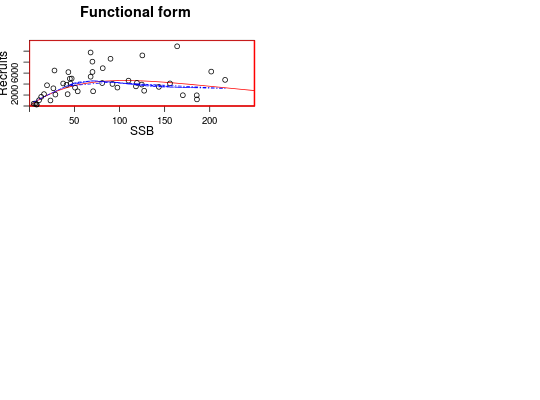
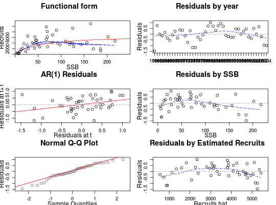

Class for stock-recruitment models.
FLSR(model, ...)
A series of commonly-used stock-recruitment models are already available,
including the corresponding likelihood functions and calculation of initial
values. See SRModels for more details and the exact
formulation implemented for each of them.
character).character).numeric).FLQuant).FLQuant).FLQuant).FLArray).FLQuants).formula).function).function).function).FLPar).logLik).array).list).logical).factor).array).# Create an empty FLSR object. sr1 <- FLSR() # Create an FLSR object using the existing SR models. sr2 <- FLSR(model = 'ricker') sr2@model#> rec ~ a * ssb * exp(-b * ssb) #> <environment: 0x67958b8>sr2@initial#> function(rec, ssb) { #> # The function to provide initial values #> res <-coefficients(lm(log(c(rec)/c(ssb))~c(ssb))) #> return(FLPar(a=max(exp(res[1])), b=-max(res[2])))} #> <environment: 0x67958b8> #> attr(,"lower") #> [1] -Inf -Inf #> attr(,"upper") #> [1] Inf Infsr2@logl#> function(a, b, rec, ssb) #> loglAR1(log(rec), log(a*ssb*exp(-b*ssb))) #> <environment: 0x67958b8>sr3 <- FLSR(model = 'bevholt') sr3@model#> rec ~ a * ssb/(b + ssb) #> <environment: 0x8542d10>sr3@initial#> function(rec, ssb) { #> a <- max(quantile(c(rec), 0.75, na.rm = TRUE)) #> b <- max(quantile(c(rec)/c(ssb), 0.9, na.rm = TRUE)) #> return(FLPar(a = a, b = a/b))} #> <environment: 0x8542d10> #> attr(,"lower") #> [1] -Inf -Inf #> attr(,"upper") #> [1] Inf Infsr3@logl#> function(a, b, rec, ssb) #> loglAR1(log(rec), log(a*ssb/(b+ssb))) #> <environment: 0x8542d10># Create an FLSR using a function. mysr1 <- function(){ model <- rec ~ a*ssb^b return(list(model = model))} sr4 <- FLSR(model = mysr1) # Create an FLSR using a function and check that it works. mysr2 <- function(){ formula <- rec ~ a+ssb*b logl <- function(a, b, sigma, rec, ssb) sum(dnorm(rec, a + ssb*b, sqrt(sigma), TRUE)) initial <- structure(function(rec, ssb) { a <- mean(rec) b <- 1 sigma <- sqrt(var(rec)) return(list(a=a, b=b, sigma=sigma))}, lower = c(0, 1e-04, 1e-04), upper = rep(Inf, 3)) return(list(model = formula, initial = initial, logl = logl)) } ssb <- FLQuant(runif(10, 10000, 100000)) rec <- 10000 + 2*ssb + rnorm(10,0,1) sr5 <- FLSR(model = mysr2, ssb = ssb, rec = rec) sr5.mle <- fmle(sr5)#> Nelder-Mead direct search function minimizer #> function value for initial parameters = 393630.401798 #> Scaled convergence tolerance is 0.00586555 #> Stepsize computed as 12106.458685 #> BUILD 4 57690516860287.562500 310129.738058 #> LO-REDUCTION 6 12705982807000.550781 310129.738058 #> HI-REDUCTION 8 3239727198324.727539 310129.738058 #> HI-REDUCTION 10 817750527737.021118 310129.738058 #> HI-REDUCTION 12 205265850254.703064 310129.738058 #> HI-REDUCTION 14 51338640090.392960 310129.738058 #> HI-REDUCTION 16 12796450411.335768 310129.738058 #> HI-REDUCTION 18 3173951749.616407 310129.738058 #> HI-REDUCTION 20 780282834.693156 310129.738058 #> HI-REDUCTION 22 188524040.817379 310129.738058 #> HI-REDUCTION 24 43998732.366860 310129.738058 #> HI-REDUCTION 26 9585253.260348 310129.738058 #> HI-REDUCTION 28 1842139.513082 310129.738058 #> HI-REDUCTION 30 559482.174780 310129.738058 #> REFLECTION 32 393630.401798 167513.875919 #> LO-REDUCTION 34 336655.619348 167513.875919 #> LO-REDUCTION 36 310129.738058 129267.464576 #> HI-REDUCTION 38 214597.819569 129267.464576 #> HI-REDUCTION 40 167513.875919 129267.464576 #> HI-REDUCTION 42 149741.520401 127450.662614 #> LO-REDUCTION 44 142848.403773 126177.484754 #> REFLECTION 46 129267.464576 115062.619405 #> HI-REDUCTION 48 127450.662614 114980.936806 #> REFLECTION 50 126177.484754 112508.004403 #> HI-REDUCTION 52 115062.619405 110421.784011 #> REFLECTION 54 114980.936806 109997.916370 #> EXTENSION 56 112508.004403 98072.820621 #> HI-REDUCTION 58 110421.784011 98072.820621 #> LO-REDUCTION 60 109997.916370 98072.820621 #> EXTENSION 62 106181.748218 87422.865784 #> EXTENSION 64 99397.359215 73554.132197 #> EXTENSION 66 98072.820621 61107.152309 #> EXTENSION 68 87422.865784 44682.528048 #> EXTENSION 70 73554.132197 25217.863534 #> EXTENSION 72 61107.152309 7457.689794 #> EXTENSION 74 44682.528048 3802.292693 #> REFLECTION 76 25217.863534 982.714422 #> LO-REDUCTION 78 7457.689794 982.714422 #> HI-REDUCTION 80 3802.292693 982.714422 #> LO-REDUCTION 82 2851.080741 305.644466 #> HI-REDUCTION 84 1524.218783 305.644466 #> HI-REDUCTION 86 982.714422 192.101555 #> HI-REDUCTION 88 712.951133 192.101555 #> HI-REDUCTION 90 306.924387 192.101555 #> LO-REDUCTION 92 305.644466 141.645497 #> HI-REDUCTION 94 254.795801 118.087615 #> LO-REDUCTION 96 192.101555 104.883238 #> LO-REDUCTION 98 141.645497 102.291280 #> LO-REDUCTION 100 118.087615 82.270179 #> LO-REDUCTION 102 104.883238 75.331313 #> HI-REDUCTION 104 102.291280 75.003137 #> LO-REDUCTION 106 82.270179 75.003137 #> HI-REDUCTION 108 75.331313 69.558351 #> REFLECTION 110 75.144513 69.221845 #> LO-REDUCTION 112 75.003137 69.221845 #> HI-REDUCTION 114 70.345781 69.221845 #> HI-REDUCTION 116 70.141037 69.221845 #> LO-REDUCTION 118 69.558351 69.049447 #> HI-REDUCTION 120 69.307705 69.031079 #> HI-REDUCTION 122 69.221845 68.978592 #> LO-REDUCTION 124 69.049447 68.978592 #> HI-REDUCTION 126 69.031079 68.946682 #> LO-REDUCTION 128 69.004155 68.946682 #> HI-REDUCTION 130 68.978592 68.946682 #> REFLECTION 132 68.964700 68.945345 #> HI-REDUCTION 134 68.959159 68.943842 #> Exiting from Nelder Mead minimizer #> 136 function evaluations usedsr5.nls <- nls(sr5) # NS Herring stock-recruitment dataset data(nsher) # already fitted with a Ricker SR model summary(nsher)#> An object of class "FLSR" #> #> Name: #> Description: #> Quant: age #> Dims: age year unit season area iter #> 1 45 1 1 1 1 #> #> Range: min minyear max maxyear #> 0 1960 0 2004 #> #> rec : [ 1 45 1 1 1 1 ], units = 10^3 #> ssb : [ 1 45 1 1 1 1 ], units = t*10^3 #> residuals : [ 1 45 1 1 1 1 ], units = NA #> fitted : [ 1 45 1 1 1 1 ], units = 10^3 #> #> Model: rec ~ a * ssb * exp(-b * ssb) #> <environment: 0x92c8858> #> Parameters: #> params #> iter a b #> 1 119.4 0.009451 #> #> Log-likelihood: 15.862(0) #> Variance-covariance: #> a b #> a 255.3388181 1.808870e-02 #> b 0.0180887 1.992659e-06plot(nsher)# change model model(nsher) <- bevholt() # fit through MLE nsher <- fmle(nsher)#> Nelder-Mead direct search function minimizer #> function value for initial parameters = -10.336211 #> Scaled convergence tolerance is 1.54022e-07 #> Stepsize computed as 501.110000 #> BUILD 3 44.842344 -11.603908#> Warning: NaNs produced#> HI-REDUCTION 5 31.685209 -11.603908#> Warning: NaNs produced#> HI-REDUCTION 7 17.913114 -11.603908#> Warning: NaNs produced#> HI-REDUCTION 9 5.415279 -11.603908#> Warning: NaNs produced#> HI-REDUCTION 11 -3.412974 -11.603908 #> HI-REDUCTION 13 -8.018030 -11.603908 #> LO-REDUCTION 15 -10.336211 -11.603908 #> LO-REDUCTION 17 -11.081040 -11.603908 #> EXTENSION 19 -11.295930 -12.061705 #> LO-REDUCTION 21 -11.603908 -12.061705 #> REFLECTION 23 -11.813826 -12.087620 #> REFLECTION 25 -12.061705 -12.199591 #> LO-REDUCTION 27 -12.087620 -12.199591 #> LO-REDUCTION 29 -12.158184 -12.199591 #> LO-REDUCTION 31 -12.191726 -12.199591 #> HI-REDUCTION 33 -12.192269 -12.199591 #> HI-REDUCTION 35 -12.197784 -12.199591 #> LO-REDUCTION 37 -12.198015 -12.199591 #> HI-REDUCTION 39 -12.199555 -12.199776 #> REFLECTION 41 -12.199591 -12.200058 #> HI-REDUCTION 43 -12.199776 -12.200092 #> HI-REDUCTION 45 -12.200058 -12.200142 #> HI-REDUCTION 47 -12.200092 -12.200155 #> HI-REDUCTION 49 -12.200142 -12.200160 #> HI-REDUCTION 51 -12.200155 -12.200177 #> HI-REDUCTION 53 -12.200160 -12.200177 #> LO-REDUCTION 55 -12.200171 -12.200179 #> HI-REDUCTION 57 -12.200177 -12.200179 #> HI-REDUCTION 59 -12.200178 -12.200179 #> HI-REDUCTION 61 -12.200179 -12.200179 #> HI-REDUCTION 63 -12.200179 -12.200179 #> HI-REDUCTION 65 -12.200179 -12.200179 #> Exiting from Nelder Mead minimizer #> 67 function evaluations usedplot(nsher)